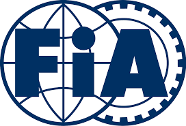

FIA Creación
Fundada en 1904, el objetivo inicial de la FIA era lograr una gestión y una seguridad coherentes para el automovilismo deportivo.
¿Qué es la FIA?
Gracias a la experiencia adquirida en este campo, la FIA se ha convertido desde entonces en una organización mundial que no solo promueve el automovilismo deportivo, sino también la movilidad segura, sostenible y accesible para todos los usuarios de las carreteras de todo el mundo. Como tal, la federación trabaja en tres áreas de actividad interrelacionadas: deporte, campañas y movilidad. En el ámbito de la movilidad, la FIA tiene como objetivo garantizar que los sistemas de transporte seguros, asequibles y limpios estén al alcance de todos. La promoción de formas seguras y sostenibles de movilidad ha llevado a la FIA a comprometerse con iniciativas globales de sostenibilidad y también a fundar su propia respuesta principal a los problemas de seguridad vial, la Acción de la FIA para la Seguridad Vial. Esta campaña mundial, en apoyo del Decenio de Acción de las Naciones Unidas para la Seguridad Vial, tiene por objeto reducir en cinco millones el número de víctimas mortales en las carreteras antes de 2020. Como órgano rector del automovilismo, la FIA garantiza que se celebren eventos justos, bien regulados y, sobre todo, seguros en todos los rincones del mundo. En última instancia, el objetivo de la FIA es simple: mantenerle activo de forma segura y dinámica.
Las primeras carreras (1950-1958)
El primer Gran Premio se realizó el 13 de mayo de 1950 en el circuito de Silverstone y fue ganado por el italiano Giuseppe Farina, consiguiendo además el campeonato de 1950 tras vencer a su compañero de equipo, el argentino Juan Manuel Fangio. Sin embargo, Fangio ganó el título en 1951, 1954, 1955, 1956 y 1957. Su racha fue interrumpida debido al bicampeonato del piloto de Ferrari Alberto Ascari. También en esta época se vieron pasar pilotos como el británico Stirling Moss que aunque pudo competir con regularidad, nunca fue capaz de ganar el Campeonato Mundial, y por ese motivo los ingleses lo consideran «el conductor más grande que nunca ganó un título mundial». El periodo estuvo dominado por las escuderías dirigidas por fabricantes de automóviles —Alfa Romeo, Ferrari, Maserati y Mercedes Benz— que habían competido antes de la guerra. En las primeras temporadas se llegaron a utilizar coches previos a la Segunda Guerra Mundial como el Alfa Romeo 159. Tenían motor frontal, de 1,5 litros de cilindrada sobrealimentados o de 4,5 litros de aspiración natural y neumáticos con dibujo. Los campeonatos mundiales de 1952 y 1953 se realizaron con la normativa de la Fórmula 2, con coches más pequeños y menos potentes, debido al escaso número de coches disponibles de Fórmula 1. Cuando se restableció el Campeonato Mundial de Fórmula 1, los motores estaban limitados a 2,5 litros; en 1954, Mercedes presentó el avanzado W196, que incluía innovaciones como distribución desmodrómica e inyección de combustible, así como una carrocería estilizada. Mercedes ganó el campeonato de conductores dos años consecutivos (1954 y 1955), antes de retirarse de todas las competiciones automovilísticas, tras el desastre de Le Mans en 1955.